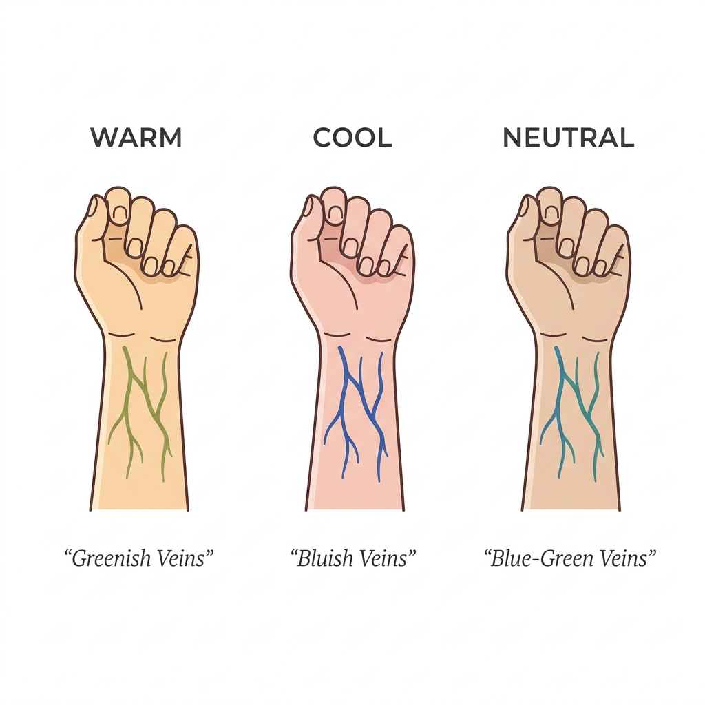
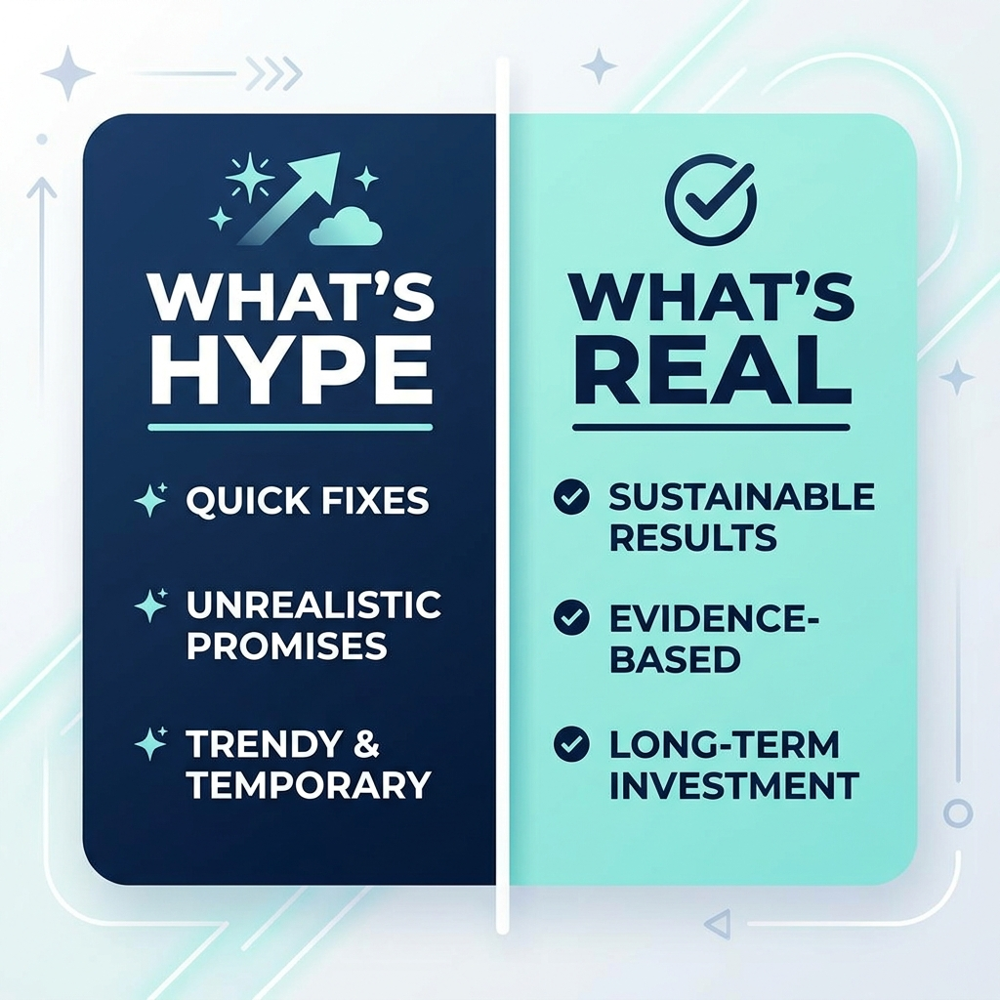
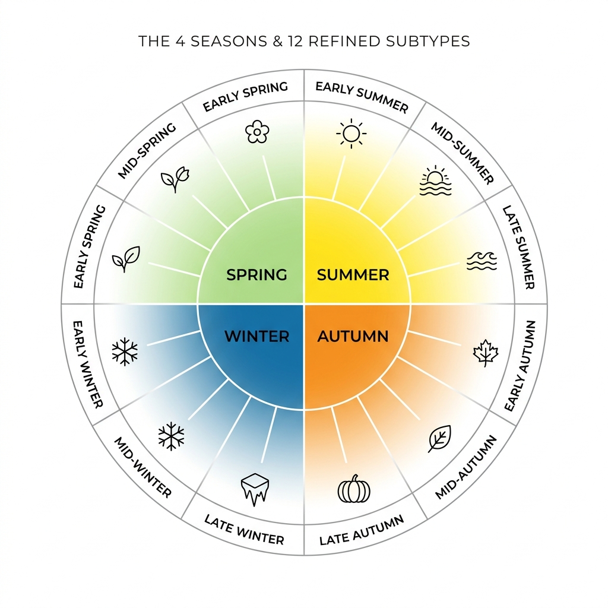
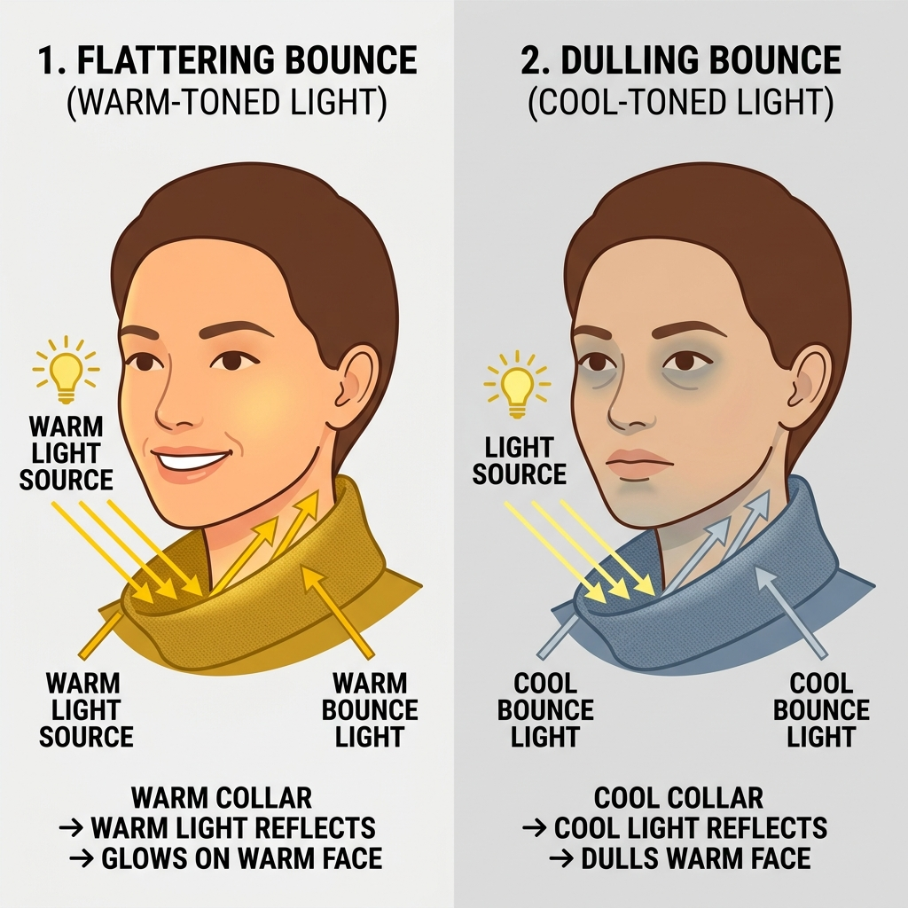
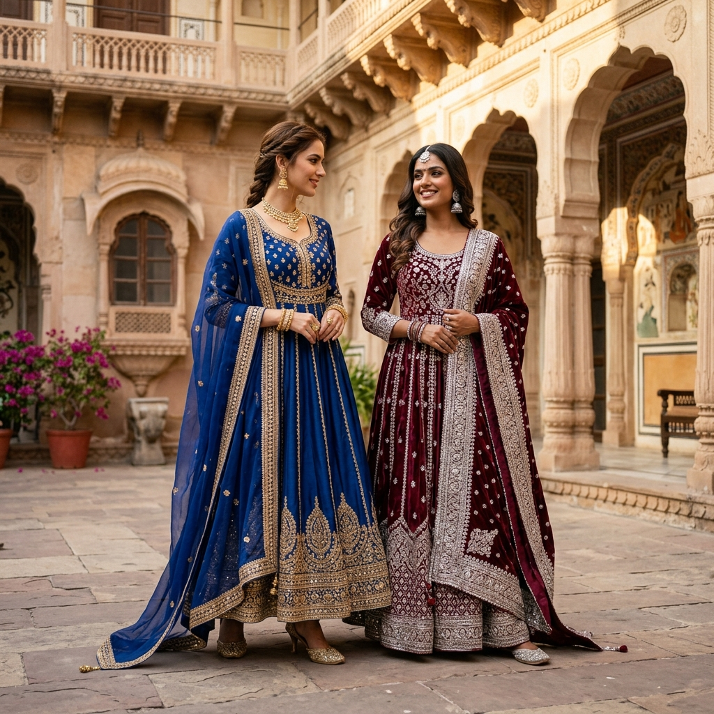
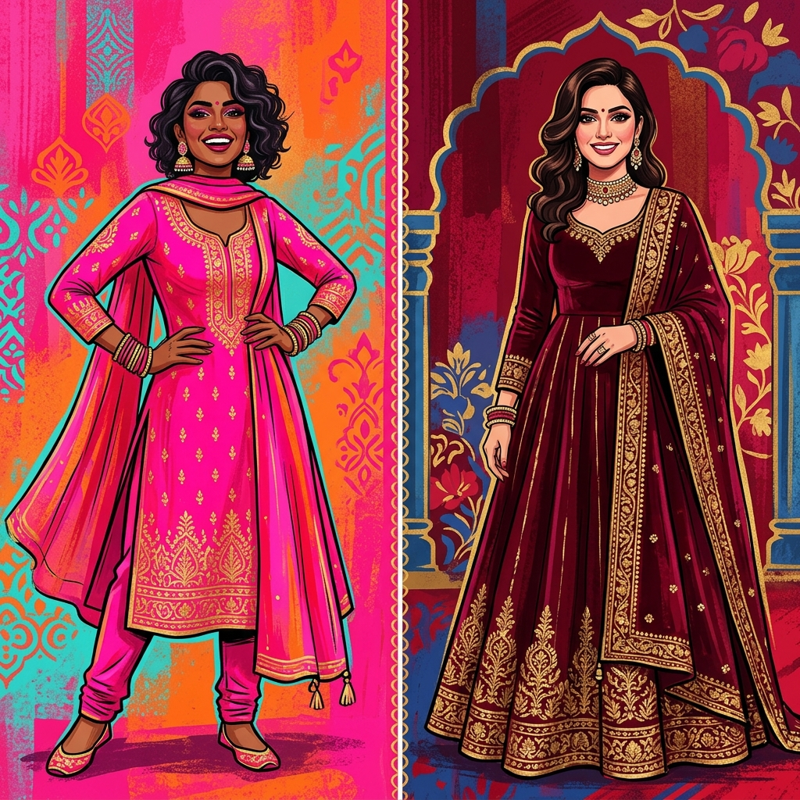
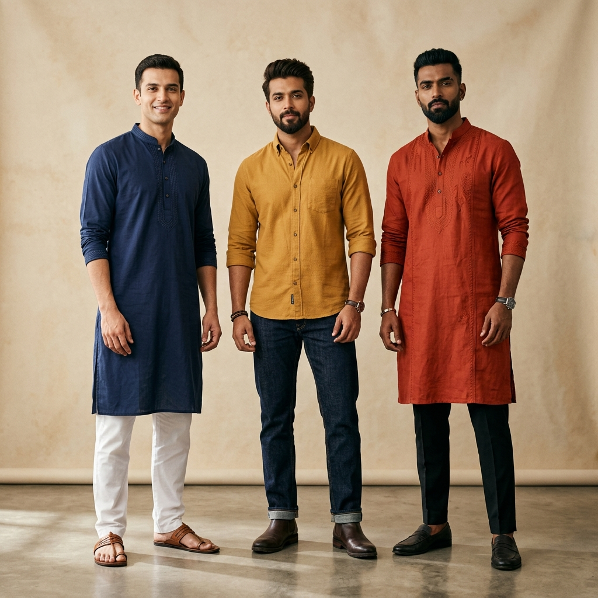

What's My Colour Season? A Simple Undertone Test (No App Needed)
Find your colour season in 3 quick questions — undertone, depth, and clarity. No professional draping required.
Read Article →
Warm vs Cool vs Neutral Undertone: How to Tell the Difference
A clear side-by-side comparison of warm, cool, and neutral undertones — tests, best colours, and best metals for each.
Read Article →
The Complete Guide to Indian Skin Tones and the Colours That Suit Them
A complete, undertone-aware guide to Indian skin tones — fair, wheatish, dusky, and deep — and the colours that genuinely suit each.
Read Article →Which Colour Suits You for Diwali? A Guide by Skin Tone
Choosing your Diwali outfit colour? Here's what actually suits your undertone and skin tone — not just what's trending this year.
Read Article →
Bridal Lehenga Colours by Skin Tone: What Actually Suits You
Not every red suits every bride. A practical, undertone-based guide to choosing your bridal lehenga colour.
Read Article →
Office Wear Colours That Actually Suit You (Not Just Boring Black and Navy)
Professional doesn't have to mean black and navy on repeat. Here's how to build a work wardrobe in colours that actually match your undertone.
Read Article →
Which Kurta Colours Suit Your Skin Tone? A Practical Guide
From everyday cotton kurtas to festive silk ones — here's how to pick kurta colours that actually suit your skin tone.
Read Article →
Does Pantone's 2026 Colour of the Year (Cloud Dancer) Suit Your Skin Tone?
Pantone named Cloud Dancer, a soft white, its 2026 Colour of the Year. Here's whether it actually suits your skin tone — and how to wear it if it doesn't.
Read Article →
Is Colour Analysis Actually Legit, or Just a TikTok Trend?
Colour analysis blew up on TikTok, but is the science behind it real? An honest look at what's proven and what's hype.
Read Article →
12-Season vs 4-Season Colour Analysis: What's the Difference?
Confused why some sites talk about 4 colour seasons and others about 12? Here's the difference explained simply.
Read Article →
Professional Colour Analysis vs. AI Colour Analysis: Which Should You Trust?
In-person colour consultants vs AI-powered apps — an honest comparison of cost, accuracy, and convenience.
Read Article →
Capsule Wardrobe by Colour Season: Building a Wardrobe That Always Matches
Most capsule wardrobes fail because of colour, not quantity. Here's how to build one around your actual palette.
Read Article →
Why Do Some Colours Make You Look Tired? The Science of Colour and Skin
It's not your imagination — the wrong colour can genuinely make you look more tired. Here's the science behind why.
Read Article →
Which Saree Colours Suit Your Skin Tone? A Practical Guide
Choosing a saree color? Learn which shades of gold, red, pastels, and jewel tones harmonize with your warm, cool, or neutral skin undertone.
Read Article →
Men's Sherwani and Wedding Wear Colours by Skin Tone
Groom styling made simple. A practical guide to choosing sherwani, kurta, and wedding wear colors that suit your warm or cool skin undertones.
Read Article →
How to Color Block Your Outfits: The Indian Fashion Guide
Master the art of color blocking. Learn how to combine solid, contrasting clothing colors for a high-impact, modern ethnic look.
Read Article →
Navratri 2026 Colour Calendar: Which Shade to Actually Wear for Your Indian Skin Tone
Navratri colour calendar 2026 with a twist — find out which shade of each day's colour actually flatters your fair, wheatish, or dusky skin tone for garba.
Read Article →
Anarkali Colours by Skin Tone: The Complete Indian Guide (Fair to Dusky)
Find the best anarkali colours for your Indian skin tone — fair, wheatish, or dusky — with warm/cool undertone breakdowns, dupatta contrast tips, and fabric advice.
Read Article →
Wedding Guest Outfit Colours by Skin Tone: The Indian Guide (Ethnic, Indo-Western & More)
What colour to wear as a wedding guest in India? Skin-tone-matched outfit colour guide for salwar kameez, indo-western sets, palazzo suits, and anarkalis — day vs evening.
Read Article →
7 Colour Rules for Indian Skin That Are Completely Wrong (And What to Wear Instead)
Stop dressing by outdated colour rules. We bust 7 common Indian skin tone colour myths — using undertone science — and tell you exactly what to wear instead.
Read Article →
Best Outfit Colours for Men With Indian Skin Tones (Fair, Wheatish & Dusky)
What colour clothes suit Indian men? A complete guide to outfit colours for fair, wheatish, and dusky Indian men — covering t-shirts, shirts, kurtas, and ethnic wear.
Read Article →